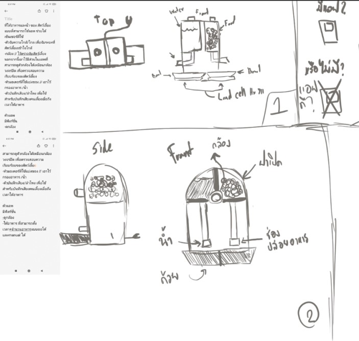
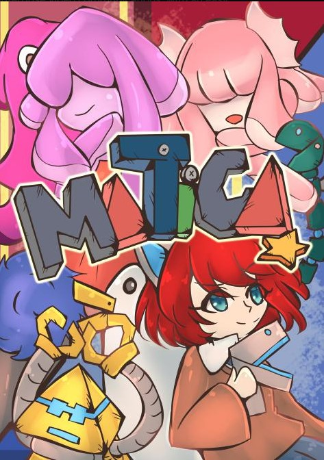

Senior Project : Mini Automatic Pet Feeder
รายละเอียดงานแบบสังเขป :
- เป็นอุปกรณ์ให้อาหารสัตว์เลี้ยงพร้อมกับแอพลิเคชั่น
- พัฒนาด้วย Arduino, MIT App Inventor และ Firebase
- แอพลิเคชั่นสามารถใช้งานในระบบปฎิบัติการ Android ได้
- สามารถเชื่อมต่อ WiFi ได้
- สามารถให้อาหารได้แบบอัตโนมัติ
รายละเอียดเพิ่มเติม

NSC : Matica(สงคราม-ความคิด)
รายละเอียดงานแบบสังเขป :
- เป็นเกม 2D Side-Scrolling
- แนว Battle Royale(เป็นเกมที่หาผู้ชนะเพียง 1 เดียว)
- สามารถเล่นได้ตั้งแต่ระบบปฎิบัติการ Window 8 ขึ้นไป
- สามารถเล่นได้เกมละ 20 คน
- พัฒนาด้วย Unity,Visual Studio Code,Adobe Photoshop